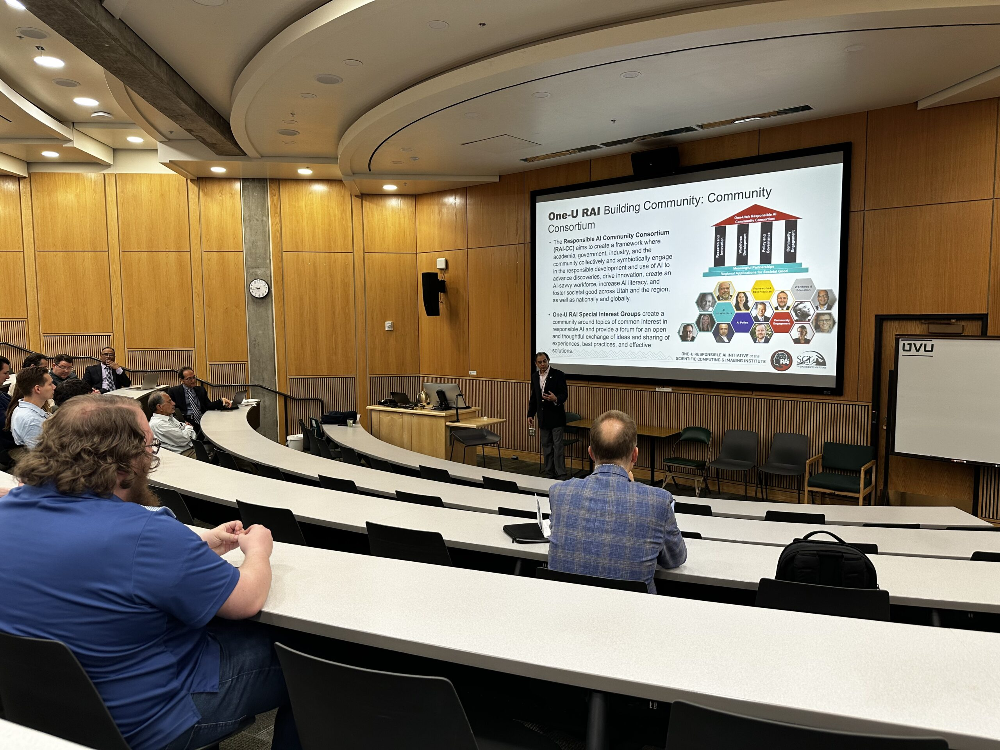
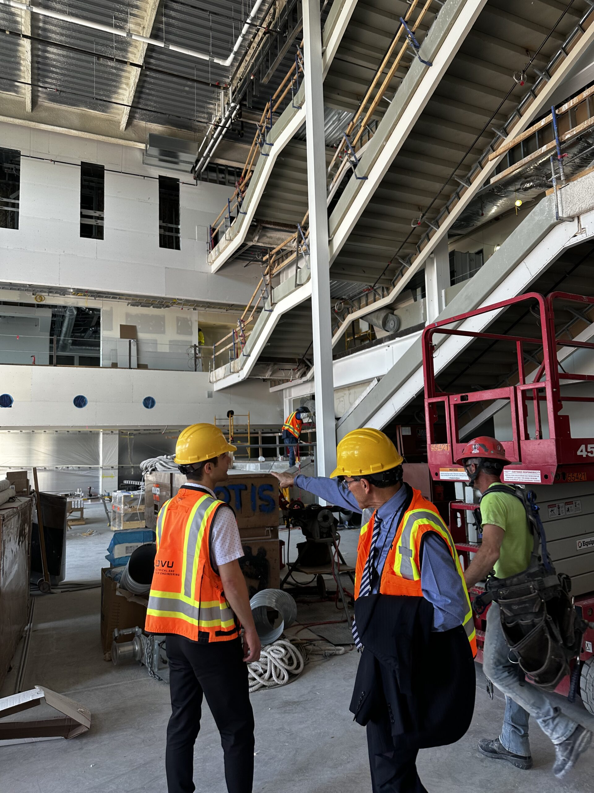
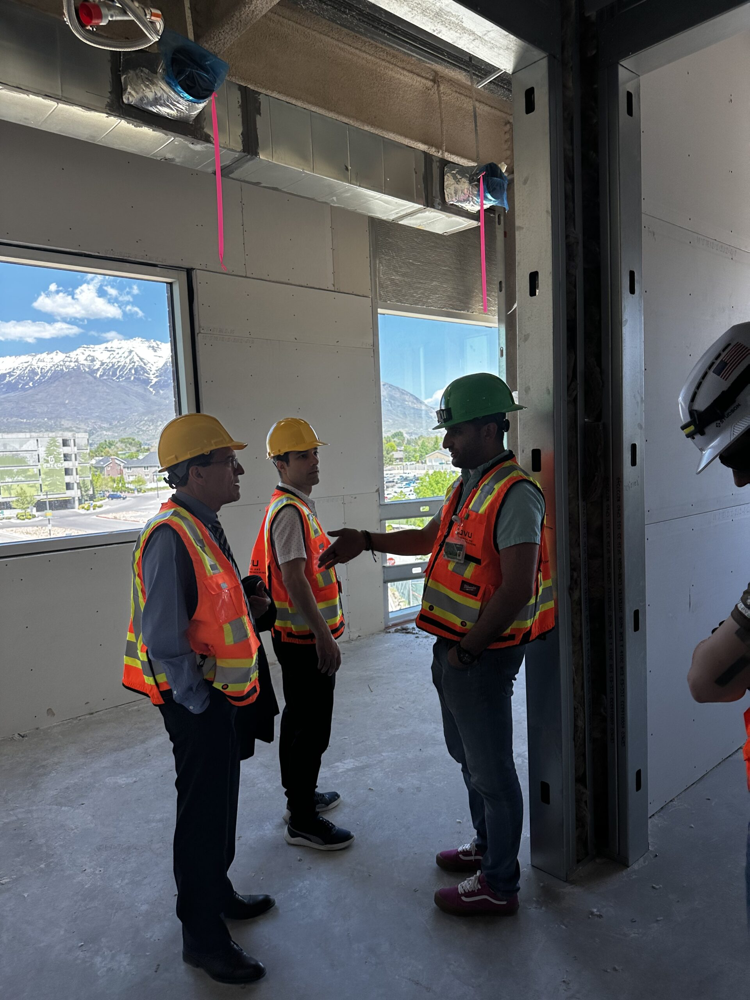
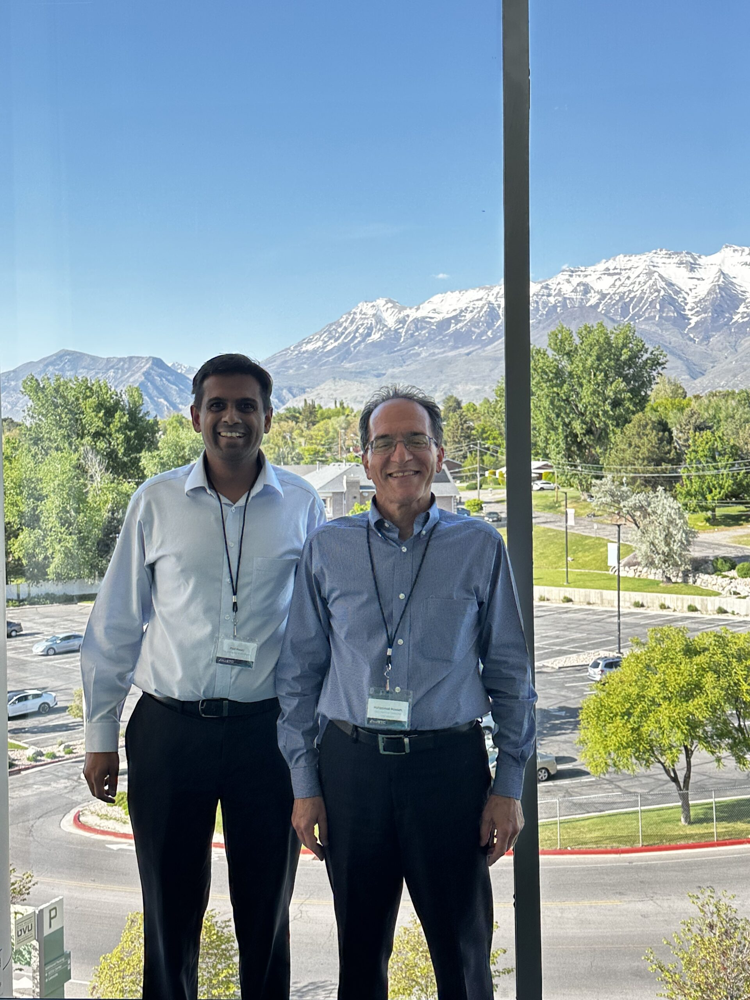
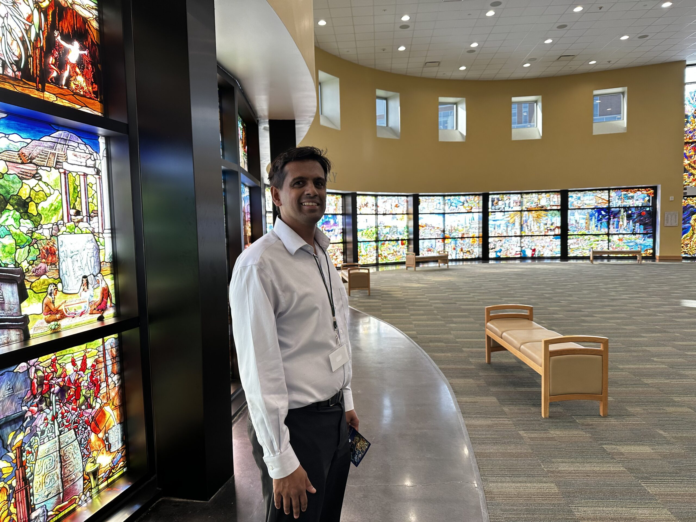

Dr. Moses presented the paper "An Experimental Wind Farm Emulator with a Dual Variable-Speed Drive Configuration" on behalf of Noah Gruman (Oklahoma Gas & Electric Corp) and Dr. Clemens (Flensburg University of Applied Science, Germany). The paper was presented at the Intermountain Engineering Technology and Computing Conference (i-ETC) May 8-10 2025 hosted by Utah Valley University (UVU).
Dr. Moses had the pleasure of reuniting with renowned expert and former doctoral advisor, Professor Mohammad Masoum, Department Chair/Head of ECE at UVU. Professor Masoum kindly showcased UVU's beautiful campus and the under-construction engineering building set amongst the incredible mountainside landscape of Utah.

Excellent presentations on the latest Artificial Intelligence research


Dr. Moses had the unique opportunity to tour the site of the state-of-the-art Engineering Building at UVU under construction.

Dr. Paul Moses and Dr. Mohammad Masoum

UVU's "Roots of Knowledge" stain-glass panorama representing many cultures and human history.